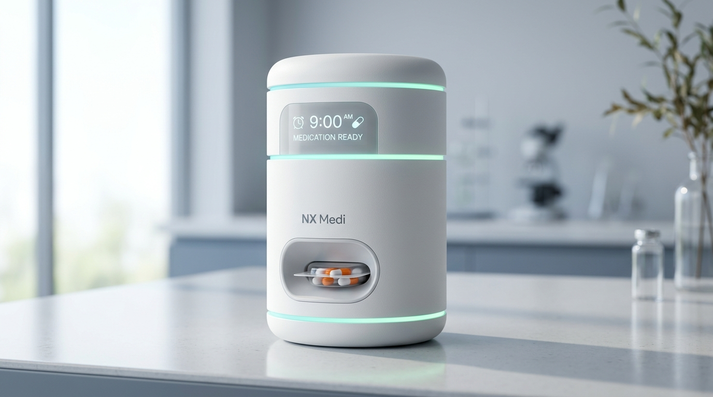

NX Medi is an IoT-powered smart medication management system that automates dispensing, reminds patients, verifies dose collection and keeps caregivers connected in real time.

Medication non-adherence leads to over 125,000 avoidable deaths and $300B in preventable medical costs annually. Traditional pill boxes and notification apps rely on guesswork.
Patients managing multiple prescriptions often misplace doses or take medications at incorrect intervals, causing treatment failures.
Without secure automated compartments, elderly patients can easily confuse morning and evening pills, triggering dangerous overdose events.
Family members living remotely cannot confirm whether a patient actually swallowed their medicine or simply dismissed a phone alarm.
Unlike ordinary reminder apps, NX Medi connects physical hardware automation with real-time cloud analytics to guarantee dose collection.
Digital prescription ingestion & dosage timetable auto-generation.
Tailored daily dose timeline synced across patient & provider devices.
Secure pre-filled blister pods loaded in locked hardware compartments.
Gentle voice, LED glowing ring & smartphone alert triggers simultaneously.
Motorized tray releases exact dose pod into accessible chute.
Optical & weight sensors verify physical removal of medication pod.
Encrypted adherence telematics uploaded to secure HIPAA cloud.
Real-time confirmation or missed dose escalation to loved ones.
Designed for total ease of use by elderly patients while maintaining rigorous clinical adherence verification for family and doctors.
Scan prescription or sync via healthcare provider portal.
Configure morning, afternoon, evening & bedtime dosage rules.
Insert tamper-proof medication pods into secure locked slots.
Voice alerts, LED ring lights, and app notifications activate.
Correct dose is safely released into the retrieval tray.
Sensors confirm medication pickup event in real time.
Adherence telemetry synced to cloud caregiver dashboard.
Caregivers get peace-of-mind status or escalation alerts.
Caregivers or physicians scan or upload official prescriptions using the NX Medi app. Our cloud engine parses dosage times, medication rules, and refill dates automatically.
Every feature in NX Medi is engineered to eliminate human error, protect patients, and give caregivers absolute certainty.
Dispenses exact medication doses automatically at pre-programmed schedule times, eliminating manual handling errors.
Clear natural voice prompts, 360-degree ambient LED ring lights, and smartphone alerts guide patients when meds are ready.
Integrated optical infrared sensors and weight detectors confirm physical retrieval of the dispensed blister pod.
Missed doses automatically trigger SMS, push notifications, or automated voice phone calls to designated caregivers.
Built-in cellular LTE and Wi-Fi modules sync adherence records instantly without requiring complex home setup.
Comprehensive remote monitoring portal showing adherence %, upcoming doses, patient logs, and historical trends.
Locking medical-grade enclosure prevents double-dosing, unauthorized access, or child tampering.
Generates objective clinical adherence reports for doctors during follow-up visits to optimize therapy outcomes.
A sleek, medical-grade physical device engineered for home reliability, accessibility, and tamper-proof security.
Displays clear medication name, dosage instructions, time countdown, and battery health in large, easy-to-read text.
Provides gentle visual cues (Soothing Teal = Ready, Soft Amber = Pending, Gentle Red = Missed) visible from across the room.
Motorized tray releases sealed blister pods into a lighted chute. Infrared beam break sensors verify physical removal.
Embedded IoT cellular transmitter ensures data sync even during home Wi-Fi outages. Internal battery offers 48h emergency power.
Designed with purpose: an ultra-accessible interface for patients and a comprehensive analytical dashboard for caregivers and clinicians.
The patient mobile app features extra-large fonts, single-tap dose confirmations, voice prompt controls, and simplified daily progress visuals. It removes all technology barriers for senior citizens.
NX Medi creates tangible value across the entire healthcare continuum — from individual families to enterprise hospital systems.
Empowers seniors managing multi-pill regimens to live independently at home with zero stress over dose timing or dosage errors.
Provides remote visibility and instant alert escalation, transforming constant worry into complete peace of mind.
Delivers objective, verified patient adherence data during clinical consultations to make data-driven treatment adjustments.
Scalable post-discharge monitoring that prevents hospital readmissions and lowers overall emergency care costs.
Measurable clinical impact designed to improve quality of life and optimize healthcare expenditure.
Boosts patient medication compliance to over 98% through automated physical dispensing and verification.
Controlled, compartment-locked release prevents double-dosing, wrong time, or incorrect drug ingestion.
Automated real-time notifications eliminate the need for constant phone checks and in-person supervision.
Keeps post-discharge cardiac, diabetic, and hypertensive patients compliant with life-saving medication plans.
NX Medi is expanding beyond smart hardware into an end-to-end digital health platform.
Machine learning models that analyze historical dosing patterns to predict potential missed doses and initiate proactive intervention.
Direct electronic health record (EHR) synchronization with hospital software for seamless e-prescriptions and clinical monitoring.
Live adherence score feeds integrated into physician video consultations to provide objective medication insights.
Automated inventory tracking that notifies partner pharmacies when pill supplies run low, dispatching sealed replacement blister pods.
Correlates verified dose collection events with real-time blood pressure, glucose, and heart rate readings from smart wearables.
Connectivity-flexible hardware designed for low-bandwidth rural health clinics and community healthcare worker programs.
See how many missed medication events NX Medi can prevent for your family or clinic each year.
Transform medication management from a reminder-based routine into a smarter, safer and verifiable healthcare experience.